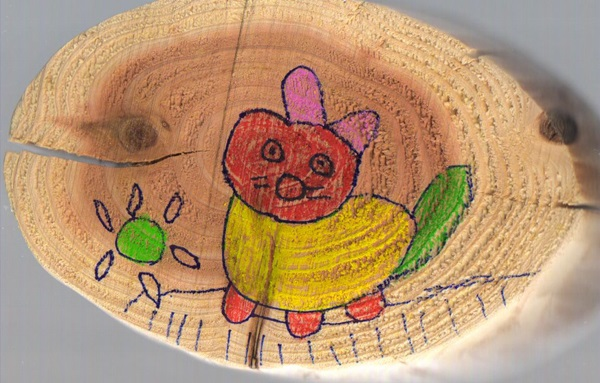

장애 유아를 위한 교육과정 의의
장애 유아를 위한 교육과정은 발달적 요구를 충족시키기 위한 체계적이고 차별화된 교육적 접근을 제공하는 데 매우 중요한 역할을 한다. 일반 유아와 달리, 장애 유아는 발달 과정에서 다양한 어려움과 독특한 요구를 경험하기 때문에, 그에 맞는 개별화된 교육이 필요하다. 장애 유아의 발달적 특성에 맞춘 교육과정은 그들이 각자의 잠재력을 최대한 발휘하고, 자립적인 생활을 영위할 수 있도록 돕는 것을 목표로 한다.

1) 발달 수준
장애 유아의 교육과정은 유아의 발달 수준을 세심하게 고려하여 각 유아에게 적합한 학습 내용을 제공하며, 다양한 교수 전략과 도구를 통해 교육이 진행된다. 이러한 교육은 단순한 지식 전달을 넘어, 유아가 사회적 상호작용을 원활히 할 수 있도록 사회성 발달을 지원하고, 자아 존중감을 형성할 수 있도록 정서적 발달을 촉진한다. 즉, 이들의 인지적, 사회적, 정서적, 신체적 발달을 통합적으로 지원한다는 점에서 중요한 의미를 가진다.
2) 개별화 교육계획(IEP)
장애 유아 교육에서 중요한 점은 개별화 교육계획(IEP, Individualized Education Program)**의 활용이다. IEP는 각 유아의 개별적 요구를 반영한 맞춤형 교육계획으로, 이를 통해 장애 유아는 자신의 발달 수준과 필요에 맞는 교육적 지원을 받게 된다. IEP는 유아의 강점과 약점을 파악하고, 이에 따라 구체적인 학습 목표와 교육 방법을 설정하는 과정이다. 이를 통해 장애 유아는 학습의 각 단계에서 자신만의 속도로 목표를 달성할 수 있다.
3) 통합적 접근
장애 유아를 위한 교육과정은 발달의 전반적인 영역을 고려한 통합적 접근을 강조한다. 예를 들어, 인지 발달을 지원하기 위해서는 문제 해결 능력과 창의적 사고를 기를 수 있는 활동이 제공되어야 하며, 사회성 발달을 촉진하기 위해 또래와의 상호작용 기회가 충분히 주어져야 한다. 신체적 발달을 지원하는 데에는 운동 능력을 강화할 수 있는 활동을 포함하고, 정서적 발달을 위해서는 자기 표현과 감정 조절을 배우는 경험을 제공하는 것이 필요하다.
또한 장애 유아 교육과정의 또 다른 특징은 협력적 교육 접근이다. 이는 교사, 부모, 치료사 등 여러 전문가들이 협력하여 유아의 전반적인 발달을 지원하는 통합적인 접근을 의미한다. 이러한 협력적 팀워크를 통해 유아에게 제공되는 교육적 지원이 일관되게 이루어지며, 부모도 자녀의 발달 과정을 이해하고 가정에서 추가적인 지원을 할 수 있게 된다.
4) 포괄적 학습 환경
장애 유아 교육과정은 또한 유아가 학습 환경에서 적극적으로 참여하고 성취감을 느낄 수 있는 포괄적 학습 환경을 제공하는 데 중점을 두고 있다. 이는 유아가 장애에 상관없이 동등하게 교육에 참여할 수 있도록 다양한 교육적 도구와 보조 기구를 활용하는 것을 의미한다. 포괄적인 학습 환경은 유아의 자아존중감과 자신감을 높여주며, 학습에 대한 동기를 강화하는 데 기여한다.
결론
결론적으로, 장애 유아를 위한 교육과정은 이들의 발달적 특성과 요구를 충족시키기 위해 맞춤형, 통합적, 협력적 접근을 기반으로 한다. 이는 유아가 각 발달 단계에서 적절한 교육을 받음으로써 자신의 잠재력을 최대한 발휘할 수 있도록 돕는 데 중점을 두고 있다. 이러한 교육과정은 유아가 자립적인 생활을 할 수 있도록 기초 생활 기술을 학습하는 것을 목표로 하며, 더 나아가 사회에 적극적으로 참여할 수 있는 능력을 기르는 데 기여한다.
장애 유아 교육의 성공적인 실현을 위해서는 교사, 부모, 전문가 간의 긴밀한 협력이 필수적이며, 유아의 발달 과정을 지속적으로 평가하고 조정하는 과정이 필요하다. 장애 유아가 자신의 강점을 기반으로 성장할 수 있도록 돕는 교육과정은 그들이 사회에서 독립적이고 의미 있는 삶을 영위하는 데 중요한 기반이 된다.
2023.10.27 - [특수장애] - 개별화교육의 정의 - 학습환경의 다양성 지원
개별화교육의 정의 - 학습환경의 다양성 지원
특수교육에서 개별화 교육은 다양한 학습 능력과 요구에 부응하기 위해 개별 학생을 중심으로 한 맞춤형 교육 접근 방식을 의미한다. 이러한 접근은 일반 교육 환경에서 학습하는 학생들과는
think-sis.co.kr